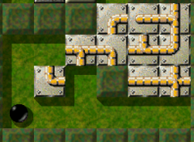
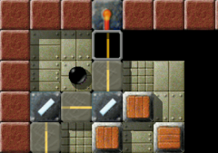
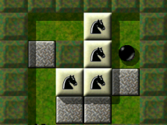
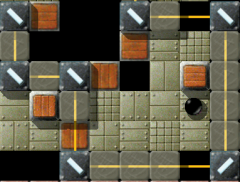
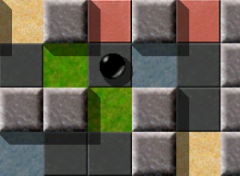
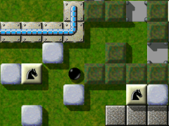
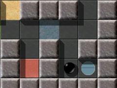
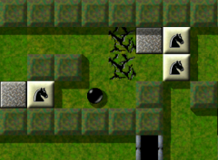

Level des MonatsJeden Monat werfen wir einen näheren Blick auf einen herausragenden Level. Herausragende Levels sind dabei solche, die sich durch die höchsten Bewertungen durch die Spieler auszeichnen, und dabei zugleich von genügend vielen Spielern auch bewertet wurden. Es ist also Ihre Wahl, die den Level des Monats bestimmt. Bitte werten Sie Levels, nachdem Sie sie gespielt haben, und vergessen Sie nicht, die Wertungen zusammen mit Ihren Spielergebnissen zum Ende eines jeden Monats uns zuzusenden. Sie können alle vorigen Level des Monats in unserem Archiv finden. October 2007: „Quadropolis“, Combined Effort Level Ivon Johannes Laire, Jacob Scott, Raoul Bourquin und Andreas LochmannIm Oktober führt unsere monatliche LdM-Exkursion zu den herausragenden Sehenswürdigkeiten von Enigma nach Quadropolis. Schon der Klang dieses Namens versetzt einen um Jahrtausende zurück in mystische Zeitalter, zurück an die Geburtsstätte der modernen Zivilisation, ins antike Griechenland. Man fühlt sich unweigerlich an klassische Heldensagen erinnert, an Herakles, Achill, Odysseus, Perseus, um nur einige zu nennen. Und an die antiken Götter und ihre enigmatische Wohnstätte, den alles überragenden göttlichen Level, den Olymp.

Enigma VI # 79 - Quadropolis
Der Eingang - Abgeschlossen! Doch zunächst zu den harten Tatsachen: Es folgen die StatistikenQuadropolis hat die Hürde der erforderlichen Mindestanzahl von 5 abgegebenen Stimmen im August übersprungen und ist mit einer Wertung von 9,40 auf Position 1 eingestiegen. Das ist der höchste Einstiegswert eines Levels in die LdM Wertung, den wir bisher verzeichnen konnten. Bei den beiden ehemaligen Spitzenreitern und Top-Favoriten auf den Level-des-Jahres-Titel, „Island Labyrinth“ und „The Aztec Temple“, die zumindest für diesen Monat erst einmal ins Verfolgerfeld abgerutscht sind, hat es einen Wechsel gegeben. IL liegt jetzt mit 9,24 Punkten bei 8 Stimmen wieder knapp vor TAT, dem Tabellenführer des letzten Monats, der 9,13 Punkte bei 7 abgegebenen Stimmen für sich verzeichnen kann. Auf Platz 4 und 5 haben Labyrinth of Puzzles (8,92/13) und Houdini (8,86/6) die Plätze getauscht. Die Plätze 6 bis 8 haben leicht an Boden verloren. Details können Sie wie immer der LdM-Highscoreliste entnehmen.
Das sieht nach einem spannenden Rennen um den LdJ Titel aus, zumal noch 2 heiße Kandidaten im Verborgenen auf ihre Chance lauern. Wer das ist, will ich hier nicht verraten, aber wer mal die Bewertungen der Levels einzeln durchcheckt, der kann mit einiger Sicherheit erkennen, um wen es sich handelt. Aber vielleicht kommt es ja auch ganz anders! Denn Sie sind es, die mit Ihren Stimmen über den Level des Monats, sowie auch über den Level des Jahres entscheiden! Also vergessen Sie nicht, die Level die Sie durchgespielt haben, auch zu bewerten. Die Reise nach Quadropolis führt uns in eine andere WeltEtwas von Olympischem Geist weht durch die Hallen dieser Sportstätte. Bei allem sportlichen Ehrgeiz der Veranstalter ist doch der Fairplay-Gedanke gegenüber den Spielern als Leitmotiv erkennbar. Bis auf den Springer-Parcours sind die Räume vom Schwierigkeitsgrad her im grünen Bereich. Im zweiten und im VIERten Raum besteht zudem keine Lebensgefahr für die schwarze Kugel. Vor nicht allzu langer Zeit war die griechische Mythologie Thema für einige Levelautoren, und eine Reihe von daraus resultierenden Werken, genaugenommen eine Dekade, sind Bestandteil von Levelpaket VI. Namen wie Troja, Odyssee, Prokrustes, Ariadne tauchen in meiner Erinnerung auf. Und natürlich Zeus, ein Werk von Raoul Bourquin, in dem nicht ganz überraschend st-flash die Hauptrolle spielt. Die Assoziation dieses himmelblauen Steines mit dem gelben Blitz darauf wird bis ans Ende des Enigmatischen Zeitalters mit Raouls Zeus verbunden bleiben.

Den Hammer finden, ein Schwert
machen, den Ritter besiegen. Das sollte kein Problem sein. Einen guten Teil dieser Level hat Andreas verfasst, der den treuen Lesern unserer LdM-Kolumne sicherlich kein Unbekannter ist. Umso überraschender ist es, da sie beide auch zum Autoren-Team des Quadropolis-Projekts gehören, dass Andreas nun das Thema von Raoul aufgreift, und im vierten Raum von Quadropolis ebenso überraschende Fähigkeiten des Blitzsteines auf beeindruckende Weise demonstriert. Andreas wird sich dazu noch im weiteren Verlauf in aller Ausführlichkeit äußern. Umgekehrt nimmt Raoul ein etwas älteres Motiv von Andreas auf, und gestaltet mit Spiegeln und Schiebesteinen einen „Laserpath“ der ganz besonderen Art. Der März war ein sehr ergiebiger Monat für EnigmaDie Homepage erschien zum ersten Mal auch in deutscher Sprache, in neuem Design und um einige neue Menüpunkte erweitert. Eine von diesen Neuerungen war die Sparte „Level des Monats“ mit „Island Labyrinth“ von Jacob Scott als erstem Titeltäger. Als einer der Autoren von Quadropolis hat sich Jacob nun bereits zum VIERten Mal in die Liste der Titelgewinner eingetragen, eine wirklich beachtliche Bilanz. Es war auch im März, genau genommen am Abend des VIERzehnten, als illmind, bekanntlich Admin des Enigma-Fan-Forums mag-heut.net, seine Idee für einen gemeinsam gestalteten Level bekannt gab, beginnend mit den Worten: „how about we make a level with several people…“. Bereits eine VIERtelstunde später meldete sich mit Johannes der erste Teilnehmer für das Projekt, und weitere VIER Stunden später war das erste CEL-Team mit VIER Autoren vollständig. Und überraschend schnell (Na, raten Sie mal!), nämlich am Abend des VIERten Tages nach Bekanntgabe, hatten alle VIER Autoren ihre Beiträge fertig. - So dachten Sie zumindest, denn es folgten noch weitere zweiundVIERzig Tage des Testens, Beratschlagens und Verbesserns, bis der Level gemeinsamer Bemühungen zum Abschluß noch seinen Namen bekam: „Quadropolis“. Dieser Name resultiert übrigens aus einem Geistesblitz von illmind, den er VIER Wochen nach Beginn des VIERten Monats nach Ablauf der VIERten Doppelstunde nach Mitternacht im Level Project Channel auf mag-heut.net bekannt gab. Keiner der VIER Autoren hatte Einwände, und nachdem auch das räteslhafte Forums-Orakel seine Zustimmung gegeben hatte, trug das Projekt CEL also endlich auch einen würdigen Namen. Weitere VIER Wochen später erschien Quadropolis dann mit Enigma 1.01 in Levelpack (Wurzel VIER plus VIER) mit der Nummer (VIER mal VIER mal fünf minus eins). Die VIERzahl prägt auch im weiteren Verlauf diesen Artikel, denn Tyche hat es so gefügt, dass sich außer den VIER Autoren auch VIER Spieler zu Worte melden werden. Diesmal haben wir VIER mal so viele Kommentatoren wie letzten Monat, sodass ich mich also ab jetzt entspannt zurücklehnen darf, und einfach nur ihren Worten zu lauschen brauche. „Meine Lieblingsobjekte in Enigma sind st-chess und st-puzzle“
- das erstere, weil ich seit vielen Jahren Schach spiele, und das letztere, weil
ich alle Arten von Permutations-Rätseln liebe. Ich hatte schon jede Menge
Ideen für Level diese Objekte betreffend, aber irgendwie fällt es
mir schwer, einen Anfang zu finden, und so habe ich bisher erst ein paar Level
verfasst.
Als ich illminds Vorschlag für das Projekt gelesen habe, fand ich sofort
Gefallen daran. Ein Raum ist groß genug, um etwas Interessantes zu
gestalten, aber nicht zu groß, um allzu viel Zeit für die
Ausarbeitung in Anspruch zu nehmen. Also habe ich rasch geantwortet, dass ich
einer von den Autoren sein möchte. Es ergab sich, dass die anderen alles
gute und erfahrene Levelautoren waren, und das hat mich noch mal zusätzlich
motiviert.

Robert Murmel ist „Der Pferdeflüsterer“
Das allererste Puzzle in meinem Raum sieht gewöhnlich
aus, aber es gibt einen kleinen Trick an der Sache: Wenn man am Anfang einen
Fehler begeht, kann man es nicht mehr lösen! Diejenigen, die mit Rubik's
Zauberwürfel vertraut sind, wissen vielleicht, dass, wenn man zwei
Stücke aus dem Würfel herausnimmt, und sie miteinander vertauscht
wieder einsetzt, die daraus resultierende Position nicht lösbar ist. Das
hat mich fasziniert, und ich war wirklich sehr erfreut, als ich festgestellt
habe, dass man die gleiche Idee auch mit den Puzzlesteinen verwirklichen
kann.
Danach habe ich den Raum nach und nach mit einigen
sorgfältig designten Chessoban-artigen Puzzles aufgefüllt. Das
einzige, was mir an meinem Raum nicht gefällt, ist die Tatsache, dass man
an einigen Stellen doch etwas Geschicklichkeit benötigt, um die
Schachfiguren zu bewegen, weil ich eigentlich vor hatte, einen puren Puzzle-Level
zu entwerfen. Aber alles in allem bin ich doch sehr zufrieden damit.
Den Level als Ganzes habe ich bisher immer noch nicht
gelöst, aber ich habe alle Räume einzeln durchgespielt und jeder
einzelne hat mir Spaß gemacht. Quadropolis ist mit Sicherheit einer meiner
Lieblingslevel.
„CEL war definitiv eine gute Erfahrung“
„Quadropolis“, das Resultat des allerersten CEL, war tatsächlich
die Zusammenarbeit zwischen verschiedenen Organisatoren und Levelautoren, mich
selbst eingeschlossen. Jeder von uns schrieb einen Raum, der einen Startpunkt
und einen Vortex beinhalten musste, sowie irgendeine teuflische Gemeinheit von
Rätsel, gerade so, wie sie uns in den Sinn kam.
Im mag-heut.net Forum wurde jeder dieser Mini-Level von uns ausgiebig getestet
und schließlich einer nach dem anderen miteinander verbunden, um so einen
Multi-Autoren-Level zu bilden, mit vielen unterschiedlichen Ideen und
andersartigen Herausforderungen.
Mein Raum stellte sich, ziemlich überraschend, als einer der einfacheren in
diesem Level heraus, gemessen an meinem Streckenrekord: ein nach einem nicht
allzu komplizierten Muster aufgebauter Raum, in dem es keine Möglichkeit
gibt, zu sterben oder einen Neustart zu erzwingen.
CEL war definitiv eine gute Erfahrung -- Ich kann es nur nachdrücklich
jedem Autor empfehlen, der plant, schwierige Level zu verfassen, und der dabei
Feedback zu seiner Arbeit bekommen möchte. In der Tat ist bereits ein neues
CEL im mag-heut.net Forum ausgeschrieben worden, und wartet immer noch auf
weitere Leveldesigner...
„Somit war bald klar, dass ich meinen Raum stark vereinfachen musste“
Alles begann mit einem Post von illmind, der mit der Idee aufkam, man
könnte ein Level bauen, bei dem verschiedene Autoren beteiligt wären,
jeder würde einen Raum bauen, und nachher sollte man diese Räume zu
einem Level zusammenfügen. Die Idee fand sofort großen Anklang, und
so kam es, dass 4 Autoren das erste „Combined Effort Level“ bauten.
So gingen wir dann an die Arbeit, jeder begann, an seinem Raum zu basteln. Ich
hatte ein Konzept, das ich in „Puzzle Puzzles“ schon einmal in einer
anderen Variante verwendet hatte: der Spieler soll einen Stein durch's ganze
Level (oder eben den ganzen Raum) schieben und dabei den Weg stückchenweise
frei machen müssen, um mit dem Stein ein finales Puzzle lösen zu
können. Also baute ich den Raum, machte den Weg möglichst lang und
verwendete diverse fiese Tricks, um den Spieler zu möglichst viel Planung
und Vorausdenken zu zwingen.
Als dann jeder seinen Raum fertig hatte, und wir begannen, die Räume in
eine lineare Anordnung zu bringen, stellte sich schnell heraus, dass der
resultierende Level viel zu schwer würde. Zumal, bedingt durch seinen
geradlinigen Aufbau, man immer alle vorderen Räume durchspielen musste, um
in den hinteren zu experimentieren.

Jetzt hab' ich's kapiert:
Just moving blocks along the laser path!
Somit war bald klar, dass ich meinen Raum stark vereinfachen musste. Da das aber
kaum möglich war, ohne etliche der Puzzles zu zerstören, beschloss
ich, diesen Raum als Ein-Raum-Level einzeln zu veröffentlichen. Daraus
wurde der Level „Industrial Puzzles“.
Nun musste aber ein neuer Raum her, doch hatte ich lange Zeit keine
schlüssige Idee, wie ich einen Raum machen könnte, der
einigermaßen in den Level passte - es musste ein Durchgangsraum sein - und
der nicht zu schwer war. Irgendwann, spät abends, kam ich dann auf die
Idee, einen Pfad zu verlegen, der einerseits von einem Laserstrahl mehrfach
gekreuzt und somit blockiert wird, andererseits unterbrochen und löchrig
ist.
Der Spieler soll den Weg abschnittweise mit Kisten füllen, und um die
geflickten Wegstücke überqueren zu können, den Laser abschalten.
Das alleine wäre aber etwas zu langweilig, also schaute ich, dass der
Spieler den Laser benötigt, um aus dem Raum heraus zu kommen - und was
liegt näher als eine Tür, gekoppelt an einen Laserswitch?
Schlussendlich muss der Laserstrahl also wieder, Spiegel um Spiegel, auf seinen
ursprünglichen Weg geschickt werden, um die Kugel in den nächsten,
spannenden Raum zu entlassen.
„Ich präsentiere gerne neue Objekte von Enigma in meinen eigenen Levels“
Der Grundgedanke für meinen Raum entwickelte sich lange vor illminds Aufruf
zum CEL I. Wie so oft, entwickeln sich Dinge auf recht unerwarteten Wegen: In
diesem Fall denke ich, war es meine Arbeit an Enigmas Referenzhandbuch im Juni
'06. Als ich Informationen über Enigmas einzigartige Spielobjekte gesammelt
habe, habe ich auch einen Blick auf st-flash's Programmcode geworfen. Er war
recht einfach. Jedesmal, wenn ein Actor ihn berührt, würde er dessen
Geschwindigkeit messen, mit 20 multiplizieren und das Ergebnis als Kraft auf
eine andere Murmel anwenden. Diese „20“ erregte meine Aufmerksamkeit -
warum „20“? Dieser Faktor war fest verdrahtet. Im Gegensatz zu vielen
anderen Faktoren im Spiel, die mittels Attributen oder globalen Variablen
verändert werden konnten, war dieser Faktor fixiert. Wahrscheinlich auf
einen Wert, der zu den alten Oxyd-Spielen passte. Aber ein unveränderbarer
Faktor? Wäre es nicht besser für st-flash, wenn diese Zahl stattdessen
ein Attribut wäre?
Ich schrieb einen Bugreport auf Berlios um diesen Punkt nicht zu vergessen, und
dachte noch etwas über die Sache nach. st-flash wurde sehr selten
verwendet. Gab es eine Möglichkeit, ihn interessanter für die
Levelautoren zu machen? Vielleicht durch ein Überraschungselement: Man
könnte die Richtung des Impulses beispielsweise verändern. Wie auf
fl-inverse, oder sogar noch verdrehter? Ich schlug vor, eine Matrix auf den
Geschwindigkeitsvektor der Murmel anzuwenden, statt nur mit einem Faktor zu
multiplizieren. Diese Matrix würde genügend Freiraum geben, um
Umkehrungen zu implementieren, Rotationen und noch kompliziertere
Zusammenhänge. Und andere Steine könnten von diesem Verhalten
ebenfalls profitieren. Also suchte ich nach weiteren Steinen, die die
Geschwindigkeit der Murmel verwenden. Ich fand schließlich st-spitter und
die st-actorimpulse-Familie, beide ebenso recht selten verwendet und ebenso
irgendwie uninteressante Objekte. Eine einfache Ergänzung, von der drei
verschiedene Objekte profitieren würden - das war die Mühe wert. Im
Juli '06 spielte Raoul die notwendigen Änderungen ein, die ich im Monat
zuvor programmiert hatte.

'ELLAS? Diese Maschine ist
in Griechenland hergestellt?! Beim Zeus, wo ist das deutsche Handbuch!?
Ich präsentiere gerne neue Objekte von Enigma in meinen eigenen Levels.
Aber was st-flash anging, hatte ich einfach keine genügend gute Idee.
Einfach nur dieses Feature anzupreisen hätte nicht ausgereicht, um einen
ganzen Level selbst zu tragen. Folglich gab es in Enigma 1.00 auch kein
Beispiel.
Im März '07 brachte illmind die Idee des Combined Effort Level ins Gespräch.
Als ich im Forum nach den verwendbaren Items gefragt hatte, spekulierte ich
bereits auf eine Chance, den neuen st-flash zu demonstrieren, und musste
eigentlich nicht um irgendwelche Items fürchten, sondern vielmehr andere weiße
Murmeln, die meine Mitstreiter verwenden könnten. Entsprechend hatte ich auch
nichts von meiner Idee erzählt, um ihre Pläne nicht zu stören. Als Jacob und
Johannes zur Crew stießen, konnte ich außerdem davon ausgehen, dass zumindest
deren Räume harte Rätsel würden, ein Geschicklichkeitsraum wäre ein Ausgleich,
und aus meinen Spekulationen wurden Pläne.
Ein Problem, das ich lösen musste, war das Design. Ich kündigte bereits recht
früh an, dass ich Raouls neue st-bigbluesand-Steine verwenden wollte. Erst
danach fiel mir auf, dass es kaum Böden gibt, die zu diesen Steinen passen. Ich
wollte keinen weißen Boden verwenden, weil Raoul das schon in „Zeus“ gemacht
hat. Schließlich erinnerte ich mich an einen Tipp, den ich Ronald gegeben
hatte, und verwendete Holz.
Es freut mich zu hören, dass mein langweiliger Raum nicht die Bewertung von
„Quadropolis“ zu sehr heruntergezogen hat, und möchte meinen drei
Mitautoren und illmind zu diesem wunderbaren und einzigartigen Projekt
gratulieren! Ich hoffe, es wird in Zukunft weitere solche Zusammenarbeiten
geben.
Nachdem nun die vier Autoren sich in aller Ausführlichkeit zu Quadropolis und zu ihren Räumen geäußert haben, möchte Ich auch noch einmal kurz das Wort ergreifen. Zuerst ein paar Worte an Andreas:Natürlich ist mir klar, dass du mit dieser Behauptung nur Widerspruch provozieren willst, und den sollst du auch haben! Ich möchte mit einem Zitat aus einem Song von Neil Young antworten „There's more to the picture than meets the eye! Hey hey my my!“ Also auf den ersten Blick betrachtet sieht es zugebenermaßen etwas langweilig aus, aber das ändert sich „blitzartig“, wenn man einmal den ersten Flash berührt hat! Raum „Quadro“ ist ja wohl wirklich „nervenaufreibend“ wie Lukas schon bemerkt hat, (ähm, sorry, bald bemerken wird) und eine wahre Geduldsprobe! Beim Zeus noch mal, wird die weiße Murmel schnell, wenn man die Blitzsteine nicht sehr behutsam behandelt! Um bis zum (letzten) Vortex zu gelangen, habe ich mehr Zeit benötigt, als für die drei anderen Räume zusammen. Wirklich ein Geduldsspiel - eine sehr langwierige Angelegenheit, aber auf keinen Fall eine langweilige! Sorry, Andreas, aber das musste sein. Ein paar Anmerkungen zu Jacob's Raum:

Patterns Reloaded? Ich hole lieber
schnell mein Buch 'Höhere Mathematik'! Beim Betreten des weißen Startfeldes öffnet sich der Vortex am Ende des Raumes wieder. Eine solche Freundlichkeit hatte ich vom Autor solcher Gemeinheiten wie den beiden „Nightmares“ oder „Monsters in the Dark“ (um nur zwei von unzähligen zu nennen) nicht erwartet. Die ersten beiden Male, als der Vortex sich geschlossen hatte, drückte ich frustriert die Escape-Taste, und wählte „Neustart“. Aber seinen Raum für das Gemeinschaftsprojekt hat Jacob wirklich fair gestaltet. Überhaupt erinnert mich das Design dieses Raumes an eine Aquarell-Landschaft mit sanften hellen Farben und mit leichtem Pinselstrich gemalt. Einfach nur Enigma purDas Schöne an diesem Raum, wie auch an den anderen dreien ist: es gibt nichts Verstecktes, keine Hohlsteine, keine Chamäleons, keine unsichtbaren Trigger, kein Wettrennen gegen die Zeit, das ist einfach nur reines Enigma. Ebenso beachtlich wie auch ungewöhnlich finde ich die Tatsache, dass in ganz Quadropolis nicht ein einziges Item benötigt wird, auch das ist, so finde ich, Enigma pur! Vielleicht hätte man im Eingangsbereich noch ein paar Bodenfliesen mit Dieb-Motiv verlegen sollen, um so die Murmel um die Last der beiden Extra-Leben zu erleichtern, das hätte eine geringfügige Beeinträchtigung der Spiel-Ästhetik vor allem im dritten Raum vermieden. Sorry für die Unterbrechung! Jetzt haben die VIER Spieler das Wort: „Der erste Raum enthält wahrscheinlich das beste Springer-Puzzle, das bisher gemacht wurde“
Quadropolis ist (von meinen bisher gelösten Levels) mein absoluter
Lieblingslevel. Schon das allgemeine Konzept, dass ein Level von vielen
verschiedenen Autoren geschrieben wurde, finde ich klasse! Und die daraus
resultierende Unabhängigkeit aller Räume. Jeder hat ein individuelles
Design und eine individuelle Grundidee, die einzige Gemeinsamkeit sind die
Vortices, die die Räume miteinander verbinden.

Diebe, sogar hier in Quadropolis!
Pegasus, mein treuer Vierbeiner, zeig' ihnen wo's lang geht!
Das bedeutet, dass jeder Raum für sich schon ein gutes Level wäre. Der
erste Raum enthält wahrscheinlich das beste Springer-Puzzle, das bisher
gemacht wurde. Es dauerte sehr lange, bis ich herausgefunden hatte, wie man den
Weg zum Ziel öffnen kann. Mein Lieblingsteil!
Darauf folgt ein eher entspannender Raum, der aber trotzdem ein interessantes
Konzept hat. Der dritte Raum sieht am Anfang äußerst kompliziert aus,
ist jedoch nach einigem Nachdenken auch lösbar. Schade ist, dass man Items
anstatt Holzkisten benutzen kann, die (fast) komplette Symmetrie und das
orginelle Konzept geben jedoch wieder Pluspunkte.
Der darauffolgende Raum ist das komplette Gegenteil; auf den ersten Blick sieht
er eher langweilig aus, ist jedoch noch eine nervenaufreibende Herausforderung
(vor allem, wenn die weiße Kugel keine Extraleben mehr hat) und zeigt
tolle Möglichkeiten des st-flashs.
Der einzige Kritikpunkt: Das Design des Oxyd-Raums ist meiner Meinung nach zu
langweilig; wenn es noch mal ein Projekt dieser Art gibt (was mich sehr freuen
würde) sollte man sich dafür noch etwas einfallen lassen.
„Man sollte zweimal hinsehen, bevor man sich bewegt“
Nach dem Anblick des ersten gelben Puzzles war ich platt. Puzzles zu lösen
kann in Situationen enden, in denen man abschließend nur noch zwei Teile
austauschen muss. Diese Aufgabe stellt sich manchmal als härter heraus als
erwartet. Aber dieses kleine Puzzle hat eine neue Idee für Puzzles
vorgeführt. Es liegt an Ihnen, wann Sie das letzte Stück ans Puzzle
anschließen. Natürlich kann man sich alles verhunzen, wenn man den
falschen Zeitpunkt dafür wählt. Aber schließlich sah ich die
Lösung - einfacher als ich ursprünglich dachte, da die Puzzleteile
weniger als ein Dutzend Mal permutiert werden mussten. Was für ein Einstieg
in einen Level!

Hey, „Hole in the Ground“, öffne
dich!
Ich bin's, Sundance Murmel!
Jedes der folgenden Schachstein-Puzzles erwies sich als eigene Herausforderung.
Schlussendlich erreichte ich neugierig den Vortex, der mich sicherlich zur
nächsten Aufgabe bringen würde.
Was für ein Unterschied! Eine neue Welt, mit neuen Gesetzen! So einfach wie
es war, die Idee dieser Welt herauszufinden, begann ich, mit der Murmel durch
dieses sehr spezielle Labyrinth zu hetzen. Nur um festzustellen, dass man
zweimal hinsehen sollte, bevor man sich bewegt.
Und eine weitere Welt auf dem nächsten Bildschirm. Nun ein herausforderndes
Steinschiebe-Rätsel. Ich hatte mich gerade entschieden, wie ich mich
bewegen musste, da prallte ich zu stark für den Metallboden ab und meine
Murmel zerschellte. Nun musste ich alle vorigen Rätsel aufs neue
durchspielen! Ich denke, etwas erhöhte Reibungswerte im ersten und dritten
Raum wären fair gewesen.
Schließlich erreichte ich den vierten Raum und sah mich einer völlig
neuen Aufgabe gegenüber. Eine Murmel auf einem Laufsteg kontrollieren mit
verzerrten Kräften. Nie habe ich vorsichtiger experimentiert als in diesem
Raum, um die Richtungen zu verstehen, in die die Murmel rollen würde. Lass
meine Murmel nicht schon wieder bruchlanden! Was für eine Erleichterung am
Ende die Oxyds zu erreichen.
Gratulation an alle vier Autoren. Mit Sicherheit hat jeder seine besten Ideen
für dieses Projekt gegeben. Obwohl dem Level ein Storyboard fehlt, das die
Räume mehr als nur auf lineare Weise zusammenhält, ist die Summe der
neuen Ideen und Puzzles überwältigend. Lasst uns hoffen, dass mehr
gemeinsame Levelprojekte folgen werden.
„Is' DAS ein geiles Level, das kriegt 'ne 10“
Als Enigma 1.01 erschien, gab es am ersten Sonntag danach kein Mittagessen. Ich
musste die neuen Level erkunden und stolperte sofort über die
Springer. Zwar kann ich Schach spielen, wusste also, wie diese Teile ziehen
würden, wenn sie denn zögen, wusste aber noch nicht, wie ich sie
zum Ziehen überreden konnte. Also übersprang ich (statt der Pferdchen)
die meisten solcher Level.
Es vergingen einige Level, bis ich die Pferdchen beherrschte. Nun machte ich
mich an alle Pferdchen-Level heran und kam so auch nach Quadropolis.
Zunächst verbrachte ich schier unendlich viel Zeit damit, das Puzzle zu
lösen. Hiermit tat ich mich sehr schwer. Natürlich löste ich es
ab und zu, hatte mir aber nicht gemerkt, wie. Freundlicherweise liegen zu Beginn
des Spiels die Puzzle-Steine immer am selben Platz, so dass ich nach vielen
(sehr vielen) Versuchen endlich gelernt hatte, es zu knacken.
Die Springer auf die richtigen Positionen zu bringen, fiel mir nicht so schwer,
nur im oberen rechten Bereich des ersten Raumes bin ich des öfteren beim
Pferdchen-Schieben durch die angebrochenen Platten gefallen und durfte von vorn
beginnen. Diese Stelle halte ich für besonders gemein.
Aus welchen Gründen auch immer, ich war der festen Überzeugung, die
Oxyds erreicht zu haben, wenn ich die Türen zum Tunnel geöffnet hatte;
schließlich war in dem einen Raum schon genug zu tun.
Umso erstaunter war ich, in einem zweiten Raum zu landen, der auf den ersten
Blick gar keine Hindernisse enthielt.........
..............bis auf die Tatsache, dass sich der Tunnel nach zwei oder drei Schritten schloß. Ich kurvte grübelnderweise ein wenig um den oberen Stein auf den bunten Platten entlang, und fand so die Lösung. Diesen Raum halte ich für den einfachsten.
Im nächsten waren natürlich immer noch keine Oxyds. Aber da ich
Spiegel-Level ohnehin mag, bereitete auch der mir keine unlösbaren
Probleme. Mit ein wenig 'Werkzeug' kommt man gut an den Lasern vorbei.
Raum 4. Keine Oxyds. Diese Energie-Überträger kannte ich schon,
bugsierte also die weiße Kugel an den ersten strategischen Punkt.
Tür auf. Die nächsten Energiesteine reagierten schon
merkwürdiger, die weiße Kugel schmierte ab, und ich sah mich schon
von Anfang an neu spielen. Aber netterweise hat auch die weiße Kugel ein
paar Leben. Bei der dritten Sorte Energie-Überträger scheiterte ich.
Ich legte Quadropolis ad acta.
Nach einigen Wochen wagte ich mich wieder daran, und hatte prompt vergessen, wie
das Puzzle zu lösen war. Auch der Zettel mit der Kurzanleitung war weg. Ich
lernte also von neuem (es dauerte diesmal nicht so lange) und gelangte ohne
größere Probleme in den vierten Raum. Mit Hilfe einer Skizze
über die Bewegungen mit den Energie-Überträgern konnte ich die
letzte Tür öffnen und hatte es geschafft.
Als der letzte Oxyd-Stein leuchtete, brüllte ich ein lautes
„Yeah“, was meinen Freund zu der Frage animierte: „Is' was?“
Ich sagte: „Is' DAS ein geiles Level, das kriegt 'ne 10.“ Soweit ich
mich erinnere, habe ich nur noch an „Pleasure Garden“ und die
„Passage“ eine 10 vergeben. Und alle drei haben sie verdient.
„Vier sehr talentierte Komponisten haben für uns alle ein Konzert zusammengesetzt“
Während sie sich alle darauf einigten, für dasselbe Musiker-Ensemble
zu schreiben, hat jeder von ihnen ein Stück in einem anderen,
kontrastierenden Stil geschrieben. Das Ergebnis ist eine musikalische Reise
durch sich erheblich voneinander unterscheidende Schalllandschaften.

Springreiten: Der große Graben!
Der Raum von Johannes ist wie eine Fuge mit ihren Rätseln und
Schachsteinen, die auf allen möglichen Pfaden bewegt werden müssen.
Ich bin dankbar dafür, dass diese wunderbare Zusammenarbeit in Bezug auf
Geschicklichkeit vorderlastig ist (entgegen bestimmten ärgerlichen Levels,
in denen man erst nach 20 Minuten spielen auf eine fast unmögliche Aufgabe
trifft). Wie viele Enigma-Levels, gibt es auch hier einen kritischen Moment des
„Alles-oder-Nichts“, dessen Überwindung bereits die halbe Miete
für den ganzen Level ist. Für mich kommt dieser
„Alles-oder-Nichts“-Moment, wenn die Murmel den angeknacksten Boden im
oberen Teil des Raumes überqueren muss. Wenn ich es schaffe, den
Schachstein zu bewegen, ohne die anderen Bodenrisse auszulösen, fühle
ich mich, als könnte ich alles schaffen.
Jacobs zweiter Raum ist ein Adagio für Streicher. Er ist so einfach in
seiner Eleganz. Sehr wohlkingend mit offenen Harmonien. Eine wirklich clevere
Idee, die mir jedesmal ein Lächeln aufs Gesicht zaubert.
Raoul entschied sich für Modernismus. Laser und Metall über einem
Abgrund - ich höre den Puls einer Trommel, der die Musik vorantreibt.
Ursprünglich löste ich diesen Raum mit Sonnenbrillen, aber das ist
absolut unnötig. Wenn man genau nachdenkt, kann man es auch ohne Extrahilfe
schaffen.
Und schließlich hat Andreas eine Jazzkomposition für uns geschrieben.
In seinem vorletzten Raum spielt er mit unseren Erwartungen. Jede Aktion hat
Konsequenzen - aber die Konsequenzen ändern sich in derselben Weise, in der
eine heiße Bebop-Kombo das Harmoniekonzept durch Akkordwechsel
erweitert.
Ich hoffe, dass diese ausgezeichneten Komponisten uns noch viele weitere
gemeinsame Konzerte erschaffen werden. Ich werde bestimmt 'zuhören'!
Während die letzten Worte von Taztunes noch erklingen, möchte ich die Harmonien der VIER Quadropolis-Autoren und der VIER Quadropolis-Freunde noch einmal in einem abschließenden Freudenchor zusammenführen und miteinstimmen: „CEL-I war ein großartiges Ereignis! Und die Reise nach Quadropolis hat sich wahrhaft gelohnt!“ Es bleibt zu wünschen, das der Erfolg von Quadropolis auch dem zweiten CEL-Projekt neue Impulse gibt. Schöne Grüße, |